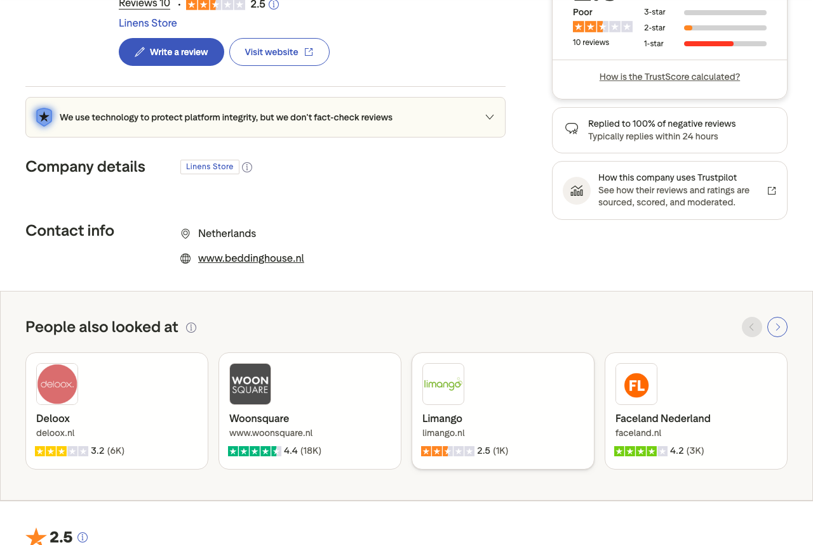
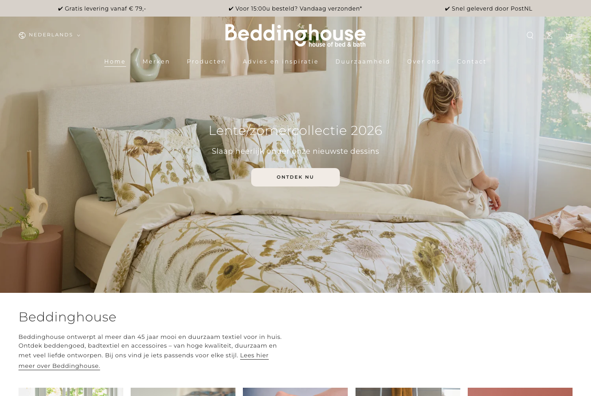

Backbone Customer Service
Persoonlijk voor Beddinghouse - Nederland
Backbone Customer Service
Persoonlijk voor Beddinghouse - Nederland
Backbone Customer Service
Persoonlijk voor Beddinghouse - Nederland
Backbone Customer Service
Persoonlijk voor Beddinghouse - Nederland
Beddinghouse is een actief beddengoed merk dat al jaren bestaat. Jullie hebben een collectie, een website, een klantengroep. En toch staan jullie op 9 reviews op Trustpilot.
Dat getal trok mijn aandacht. Niet omdat het per se slecht is, maar omdat het opmerkelijk laag is voor een merk van dit formaat.
Ik ben Jeffrey. Ik run Backbone Customer Service, een klantenservice-bureau dat zich specialiseert in D2C merken in home & living. Ik stuur deze brief omdat ik iets zie wat de moeite waard is om over te praten.
Er zijn twee verklaringen voor 9 reviews. De eerste: de klanttevredenheid is zo hoog dat klanten tevreden vertrekken maar er niet aan denken om te schrijven. De tweede: de CS-aanwezigheid online is zo beperkt dat klanten er simpelweg niet aan worden herinnerd. Beide zijn een gemiste kans.
Want Trustpilot is niet alleen een reviewplatform. Het is een plek waar nieuwe klanten beslissingen nemen. Een merk met 9 reviews is voor hen een merk dat ze nog niet kennen.
Ik begon bij Trustpilot.

9 reviews voor een actief beddengoed merk dat al jaren bestaat. Dat is opvallend laag. Niet per se een teken van slechte service - eerder een teken dat tevreden klanten niet actief gevraagd worden om iets te schrijven.
Daarna keek ik naar de website.

Een gevestigd beddengoed merk met een eigen collectie en een klantgroep. Maar op Trustpilot is die klantgroep vrijwel onzichtbaar. Klanten die blij zijn gaan door met hun dag. Klanten die iets te melden hebben schrijven. Dat scheefgroeit tenzij je er actief aan werkt.
9 reviews kan groeien naar 90 of 190 als de funnel op orde is. Dat vraagt snelle afhandeling, proactieve follow-up en een uitvraag op het juiste moment.
Een actief review-programma begint bij de klantenserviceervaring. Klanten die goed geholpen zijn, schrijven. Klanten die zich gehoord voelen, schrijven. Klanten die een probleem hadden en een oplossing kregen, schrijven ook.
9 reviews kan groeien naar 90 of 190 als de funnel op orde is. Dat vraagt een combinatie van snelle afhandeling, proactieve follow-up en een gerichte uitvraag op het juiste moment.
Dat is precies wat ik doe voor D2C merken in home & living.
Backbone Customer Service is klein en gespecialiseerd. Wij werken uitsluitend voor D2C merken in home, living en lifestyle. Jullie klanten praten met mensen die weten wat premium beddengoed is.

Ik ben Jeffrey. Ik heb Backbone opgericht omdat ik zag hoe vaak goede D2C merken hun reputatie lieten liggen door een klantenserviceervaring die niet bij het merk paste. Samen met Dylan werk ik voor merken die hun CS willen inzetten als groeimiddel, niet als kostenpost.
Ik laat zien wat ik zie, hoe ik het aanpak en wat dat voor Beddinghouse betekent. Vrijblijvend.